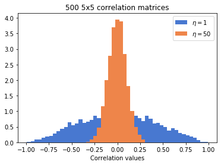
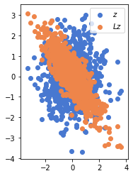
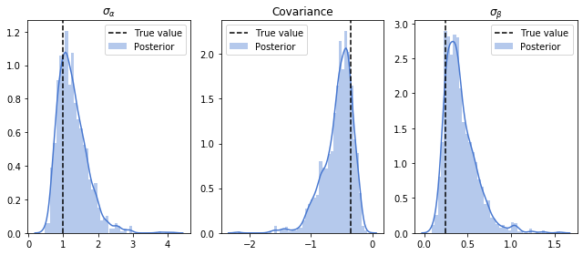
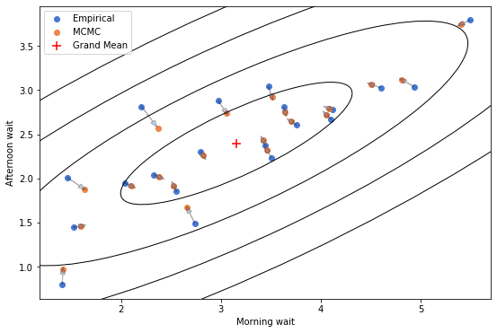

Varying Slopes Models and the CholeskyLKJ distribution in TensorFlow Probability
TL;DR
Covariance matrices allow us to capture parameter correlations in multivariate hierarchical models; sampling these using Hamiltonian Monte Carlo in Tensorflow Probability can be tricky and confusing; this post is about some of the math involved and how to get this right.
Intro
Hierarchical models allow us to account for variations between different groups in our data. Let’s say that, for some reason, we have different groups of tadpoles in different tanks and we want to model per-tank survival rates. Varying intercepts models allow us to fit different models to different tanks, while pooling together information between tanks. The tanks are somewhat different (they’re not the same tank), so we allow their parameters to vary; but they’re also similar (they’re all tanks with tadpoles, not oranges or ships), so we can do some “transfer learning” between tanks.
Varying intercepts are already very powerful models. However, in many (most?) situations, the models we fit have more than just an intercept. Let’s say we have 3 groups in our data, and we want to fit a simple linear model for each group, but also to share information between groups. Each model has two parameters (a slope and an intercept), and we allow these to vary. We can also allow them to covary. For example, if higher slopes usually go with lower intercepts, we want to know that, and use that to improve our estimation of both.
To capture this covariance amongst parameters, we’re going to need a covariance matrix.
The LKJ prior
Every 2x2 covariance matrix can be decomposed as a product of a diagonal matrix of standard deviations $\sigma_\alpha,\sigma_\beta$ with a correlation matrix $\Sigma$, in the following form (same holds for higher dimensions):
$$\mathbb{S} = \left(\begin{smallmatrix} \sigma_\alpha & 0 \\\ 0 & \sigma_\beta \end{smallmatrix}\right) \cdot \Sigma \cdot \left(\begin{smallmatrix} \sigma_\alpha & 0 \\\ 0 & \sigma_\beta \end{smallmatrix}\right)$$
The decomposition is conceptually useful - it’s usually easier to think about the variances (which are single-parameter properties, and depend on things like unit of measurement and typical scale) separately from the correlation structure (a pairwise property). Technically, putting a prior on the variances isn’t very hard - we just need to make sure the variables are non-negative.
A priori, it’s not obvious how to put a prior on correlation matrices. We can’t sample each matrix element by itself; correlation matrices have to be postitive definite, so their elements are somewhat “entangled” - the value in the $\left[i,j\right]$-th entry effects the element in the $\left[k,l\right]$-th entry. Luckily for us, in 2009, Lewandowski, Kurowicka, and Joe published a method for generating random correlation matrices, aptly referred to as the LKJ distribution. Like other probablistic programming languages, TFP implements the LKJ distribution. It’s a distribution that gets two numbers as inputs - $N$, the dimension of the correlation matrix, and $\eta$, a concentration parameter that controls how plausible are large correlations; Larger $\eta$ mean correlations are more concentrated around zero 1.
# the necessary imports
import tensorflow as tf
import tensorflow_probability as tfp
import pandas as pd
import seaborn as sns
import matplotlib.pyplot as plt
import numpy as np
from matplotlib.patches import Ellipse
from tensorflow_probability import distributions as tfd
from tensorflow_probability import bijectors as tfb
tf.compat.v1.enable_eager_execution()
# for plotting
sns.set_palette("muted")
# for reproducibility
np.random.seed(324)
tf.random.set_random_seed(234)
Here’s how samples from different LKJ distributions look like. We sample 500 correltion matrices with $\eta=1$ and 500 matrices with $\eta=50$:
plt.hist(tfd.LKJ(5,1).sample(500).numpy().flatten(), bins=np.linspace(-0.99,0.99), density=True, label="$\eta=1$")
plt.hist(tfd.LKJ(5,50).sample(500).numpy().flatten(), bins=np.linspace(-0.99,0.99), density=True, label="$\eta=50$")
plt.xlabel("Correlation values")
plt.title("500 5x5 correlation matrices")
plt.legend()

Problem #1 - falling off the manifold
So far so good - sampling correlation matrices seems straightforward. The problem starts when we want to use a Hamiltonian Monte Carlo (and we usually want to use Hamiltonian Monte Carlo) to sample from some larger model that contains an LKJ distribution. HMC allows us to generate samples from arbitrary joint distributions, not only from distributions for which we have explicit sampling methods. Here’s a toy example to illustrate the problem. The model is simply a single LKJ distribution within a JointDistributionSequential object:
model = tfd.JointDistributionSequential(
[
tfd.LKJ(2,2),
]
)
model.sample()
[<tf.Tensor: id=7897612, shape=(2, 2), dtype=float32, numpy=
array([[ 1. , -0.43337458],
[-0.43337458, 1. ]], dtype=float32)>]
model.sample() seems to work, so that’s encouraging. However, when we try to “naively” use an HMC sampler to generate samples from the model, things go wrong. We add a small helper function to avoid rewriting all the kernels everytime; see the previous post for explanations about the different function calls here.
def sampleHMC(log_prob, inits, bijectors_list = None):
inner_kernel=tfp.mcmc.HamiltonianMonteCarlo(
target_log_prob_fn=log_prob,
step_size=0.1,
num_leapfrog_steps=3
)
if bijectors_list is not None:
inner_kernel = tfp.mcmc.TransformedTransitionKernel(inner_kernel, bijectors_list)
adaptive_kernel = tfp.mcmc.SimpleStepSizeAdaptation(
inner_kernel=inner_kernel,
num_adaptation_steps=400
)
return tfp.mcmc.sample_chain(
num_results=500,
current_state=inits,
kernel=adaptive_kernel,
num_burnin_steps=500,
trace_fn=None
)
lkj_samps = sampleHMC(
log_prob=lambda lkj: model.log_prob([lkj]),
inits=model.sample()
)[0]
lkj_samps[:3] # we print the first 3 samples
<tf.Tensor: id=8349304, shape=(3, 2, 2), dtype=float32, numpy=
array([[[ 28.062887, 81.77511 ],
[-80.5103 , -68.75983 ]],
[[ 65.458626, 72.01995 ],
[-87.03769 , -59.71089 ]],
[[104.11292 , 85.66264 ],
[-83.73789 , -60.2727 ]]], dtype=float32)>
Here we can already see the problem; these aren’t correlation matrices by any means. What’s happening here is that HMC, which operates in an unconstrained space of real numbers, “falls off” the correlation matrices manifold. The solution for this is what’s called a bijector. Without getting into the gory mathematical details 2, a bijector can be thought of as a differentiable one-to-one mapping between the unconstrained space in which the HMC trajectories live, and the constrained manifold. HMC produces samples in the unconstrained space, and the appropriate bijector spits out a valid correlation matrix. For us, this bijector is tfb.CorrelationCholesky(). Note that we need to pass a list of bijectors to the TransformedTransitionKernel constructor; in this case, we’re passing just a single bijector:
bij_lkj_samps = sampleHMC(
log_prob=lambda lkj: model.log_prob([lkj]),
inits=model.sample(),
bijectors_list=[tfb.CorrelationCholesky()]
)[0]
bij_lkj_samps[:3]
<tf.Tensor: id=9873388, shape=(3, 2, 2), dtype=float32, numpy=
array([[[ 1. , 0. ],
[-0.43139905, 0.90216124]],
[[ 1. , 0. ],
[-0.43139905, 0.90216124]],
[[ 1. , 0. ],
[-0.43139905, 0.90216124]]], dtype=float32)>
At first glance, these don’t look like correlation matrices either; that’s because they’re the Cholesky factors of kosher correlation matrices.
Overthinking box - Cholesky factors 3
Every correlation matrix $\Sigma$ can be decomposed as a product of a lower triangular matrix $L$ and its transpose $L^T$. More formally, a lower triangular matrix $L$ is the Cholesky factor of some correlation matrix $\Sigma$ if and only if its diagonal elements are strictly positive and each of its rows has unit norm.
Cholesky factors come up in many different places in statistics, machine learning, metric learning, computational linear algebra, etc. In the context of Monte Carlo simulations, Cholesky factors are used to generate correlated quantities (which we often want) from uncorrelated samples (which are easy to generate in the computer): If $z$ is a matrix of uncorrelated normally distributed numbers, and $L$ is the Cholesky factor of some correlation matrix $\Sigma$, then $Lz$ would have the correlation structure described by $\Sigma$.
Here’s a simple demonstration. We generate 1000 samples from a bivariate guassian with zero mean, unit variance and no correlation:
z = tf.transpose(tfd.MultivariateNormalDiag(loc=[0,0], scale_diag=[1,1]).sample(1000))
We now define a correlation matrix between two variables with correlation -0.85. We compute its Cholesky factor, multiply it with the original (uncorrelated) data, and voila:
M = tf.constant([[1,-0.85],[-0.85,1]])
L = tf.cholesky(M)
Lz = L@z
plt.scatter(z[0], z[1], label="$z$")
plt.scatter(Lz[0], Lz[1], label="$Lz$")
plt.legend(loc='upper right')

We can see that the two components of $Lz$ are negatively correlated, as expected. More quantitatively, here’s the correlation matrix for the cholesky-tranformed data:
tfp.stats.correlation(tf.transpose(Lz))
<tf.Tensor: id=9873636, shape=(2, 2), dtype=float32, numpy=
array([[ 0.9999995 , -0.8532509 ],
[-0.8532509 , 0.99999976]], dtype=float32)>
Problem #2 - the wrong log_prob
So the bijector solves the constrained-unconstrained problem, and HMC can run smoothly. But things are trickier than that (and the sampler won’t tell you that). The HMC sampler works with the log probability function of the model. If we have an LKJ distribution somewhere in our model, than for every sample, HMC computes the log_prob of the correlation matrix according to LKJ. But LKJ is a distribution over correlation matrices, not Cholesky factors of correlation matrices, which is the output of our bijector! So we end up computing the wrong log_prob, which means we’re not sampling from the model we think we’re sampling. So what can we do?
Solution number 1 is to make sure our cholesky-factors-of-correlation-matrices become correlation matrices before we compute their log_prob according to LKJ. To do so, we need two more bijectors: tfb.CholeskyOuterProduct, which maps $L$ to $LL^T$, and tfb.Chain which, surprisingly, chains (composes) the two bijectors:
chained_bij_samps = sampleHMC(
lambda lkj: model.log_prob([lkj]),
model.sample(),
bijectors_list=[tfb.Chain([tfb.CholeskyOuterProduct(), tfb.CorrelationCholesky()])]
)[0]
chained_bij_samps[:3]
<tf.Tensor: id=12661134, shape=(3, 2, 2), dtype=float32, numpy=
array([[[ 1. , -0.21354356],
[-0.21354356, 1. ]],
[[ 1. , -0.21354356],
[-0.21354356, 1. ]],
[[ 1. , 0.01905983],
[ 0.01905983, 1.0000001 ]]], dtype=float32)>
This looks good. And this time it actually is - this is doing what we think it’s doing. But this is cumbersome, and not very readable. Even worse, when we’ll pass these correlations matrices to a multivariate gaussian (the usual case), it’ll compute their cholesky factors anyway (check out the source code, as well as the depracation warning above it). So we end up sampling cholesky factors, tranforming them back to correlation matrices just to compute their cholesky factors again…
Enter CholeskyLKJ
Since tfp-nightly-0.9.0.dev20190830 (a daily-built version that contains the newest changes that have yet to made it into the latest stable release), we have a better option - the CholeskyLKJ distribution. Unlike LKJ, this is a distribution over cholesky factors of correlation matrices - so no need to go back and forth, or to chain bijectors… It’s faster, numerically stabler, and it is by the book.
To use it, we just need a single tfb.CorrelationCholesky() bijector:
model = tfd.JointDistributionSequential(
[
tfd.CholeskyLKJ(2,2),
]
)
cholesky_lkj_samps = sampleHMC(
lambda lkj: model.log_prob([lkj]),
model.sample(),
bijectors_list=[tfb.CorrelationCholesky()]
)[0]
cholesky_lkj_samps[:3]
<tf.Tensor: id=14269238, shape=(3, 2, 2), dtype=float32, numpy=
array([[[ 1. , 0. ],
[ 0.20048861, 0.97969604]],
[[ 1. , 0. ],
[-0.19122852, 0.9815455 ]],
[[ 1. , 0. ],
[ 0.18798688, 0.9821716 ]]], dtype=float32)>
A simple use case
We’ve covered the technicalities of sampling correlation matrices (and their Cholesky factors) with TFP. To get a more complete picture of how these are actually used, let’s see an example. We’re sticking with McElreath and Statistical Rethinking; this time we’re reproducing the café waiting times example.
Fake data
Unlike the tadpoles example, this time we’re going to model fake data (aka synthetic data). This may sound strange, but it’s actually a very useful skill, and it’s considered by many to be pretty much the first step in a Bayesian data analysis workflow (see here). The reason is that unlike in a “real data analysis”, when you’re generating fake data, you know the true underlying data generating process; making sure you can recover its parameters is a very important sanity check. It also helps in verifying the model is correctly specified and that the MCMC sampler does what you think it does, which is good.
The data we’re generating describes the waiting times in 20 different cafés. Each café has a different average waiting times in the morning and in the afternoon. The average morning waiting time is the intercept, and the difference between afternoon and morning average waiting times is the slope. The intercepts and slopes for each of the 20 cafés are sampled from a (surprise surprise) correlated bivariate Gaussian distribution.
##### Inputs needed to generate the covariance matrix between intercepts and slopes #####
a = 3.5 # average morning wait time
b = -1 # average difference afternoon wait time
sigma_a = 1 # standard deviation in the (café-specific) intercepts
sigma_b = 0.5 # standard deviation in the (café-specific) slopes
rho = -0.7 # correlation between intercepts and slopes
mu = [a,b] # the mean of our gaussian distribution
sigmas = [sigma_a,sigma_b] # vector of standard deviations
corr_matrix = np.array([[1,rho], [rho,1]]) # correlation matrix
cov_matrix = np.diag(sigmas)@corr_matrix@np.diag(sigmas) # the covariance matrix of our gaussian distribution
After setting the true parameters, we’re generating 20 samples of cafés:
n_cafés = 20 # 20 cafés overall
café_params = np.random.multivariate_normal(mu ,cov_matrix,size=n_cafés)
café_intercept = café_params[:, 0] # intercepts are in the first column
café_slopes = café_params[:, 1] # slopes are in the second
And compute the actual per-café morning and afternoon waiting times, in 10 different visits. Below is a sample of 10 rows from our dataframe (which has 200 data points overall - 10 visits in 20 cafés):
n_visits = 10 # 10 visits per café
afternoon = np.tile([0,1], n_visits * n_cafés//2) # alternate values for mornings and afternoons in the data frame
café_id = np.repeat(np.arange(n_cafés),n_visits) # data for each café are consecutive rows in the data frame
mu = café_intercept[café_id] + café_slopes[café_id] * afternoon # the regression equation for the mean waiting time
sigma = 0.5 # standard deviation of waiting time within cafés
wait = np.random.normal(mu, sigma, n_visits * n_cafés) # generate instances of waiting times
df = pd.DataFrame(dict(café = café_id, afternoon = afternoon, wait = wait))
print(df.sample(10).to_string(index=False))
café afternoon wait
8 1 2.175858
9 0 2.364313
9 1 1.744504
14 0 3.716937
3 1 1.419163
0 1 1.959044
5 0 1.045913
4 0 1.083699
17 1 2.796278
15 1 3.430852
The model
We specify in math (and latex) the model described above:
$$\begin{align}
W_i & \sim \text{Normal}(\alpha_{café[i]}+\beta_{café[i]}\cdot \text{AFTERNOON}_i,\sigma) \\\
\binom{\alpha_{café}}{\beta_{café}} & \sim \text{MVNormal}\left(\binom{\alpha}{\beta},\mathbb{S}\right) \\\
\mathbb{S} & = \left(\begin{smallmatrix} \sigma_\alpha & 0 \\\ 0 & \sigma_\beta \end{smallmatrix}\right) \cdot LL^T \cdot \left(\begin{smallmatrix} \sigma_\alpha & 0 \\\ 0 & \sigma_\beta \end{smallmatrix}\right) \\\
\alpha & \sim \text{Normal}(5,2) \\\
\beta & \sim \text{Normal}(-1,0.5) \\\
\sigma_{\alpha},\sigma_{\beta} & \sim \text{Exp}(1) \\\
\sigma & \sim \text{Exp}(1) \\\
L & \sim \text{CholeskyLKJ}(2,2) \\\
\end{align}$$
model = tfd.JointDistributionSequential(
[
tfd.CholeskyLKJ(2,2), # rho, the prior for the correlation matrix between intercepts and slopes
tfd.Sample(tfd.Exponential(rate = 1),sample_shape = 1), # sigma, prior std for the waiting time
tfd.Sample(tfd.Exponential(rate = 1),sample_shape = 2), # sigma_café, prior of stds for intercepts and slopes (vector of 2)
tfd.Sample(tfd.Normal(loc = -1, scale = 0.5), sample_shape = 1), # b, the prior mean for the slopes
tfd.Sample(tfd.Normal(loc = 5, scale = 2), sample_shape = 1), # a, the prior mean for the intercepts
lambda a,b,sigma_café,sigma,chol_rho : tfd.Sample( # per-café intercepts and slopes
tfd.MultivariateNormalTriL(
loc = tf.concat([a,b],axis=-1),
scale_tril = tf.linalg.LinearOperatorDiag(sigma_café).matmul(chol_rho)
),
sample_shape=n_cafés
),
lambda mvn, a, b, sigma_café, sigma : tfd.Independent( #per-café waiting times
tfd.Normal(
loc = tf.gather(mvn[:,:,0],café_id,axis=-1) + tf.gather(mvn[:,:,1],café_id,axis=-1)*afternoon,
scale = sigma
),
reinterpreted_batch_ndims=1
)
]
)
Couple of non-trivial things in the model above:
MultivariateNormalTriL: we’ve mentioned that a covariance matrix can be specified as $\Lambda L L^T\Lambda$ where $\Lambda$ is a diagonal matrix of standard deviations and $L$ is the cholesky factor of the correlation matrix.MultivariateNormalTriLis a parametrization of a multivariate normal distribution whose covariance matrix is specificied using the lower triangular matrix $\Lambda L$.LinearOperatorDiag: this turns asigma-cafévector of length 2 to a 2x2 diagonal matrix; very similar totf.diag, but handles all the batching semantics for us.tf.gather: this takes each intercept (in the case ofmvn[:,:,0]) and slope (in the case ofmvn[:,:,1]and tiles it 10 times, so overall we get a loc vector of size 200, with which we generate 200 different waiting times, 10 per café.
We now declare the target_log_prob function for the HMC kernel, and initial values for 4 different chains. Like before, we throw away the last sample (predicted waiting times); we want to plug the waiting times from the data into the likelihood, instead.
n_chains = 4
log_prob_fn = lambda rho, sigma, sigma_café, b, a, mvn : model.log_prob([rho, sigma, sigma_café, b, a, mvn ,wait])
init_rho, init_sigma, init_sigma_café, init_b, init_a, init_mvn, _ = model.sample(n_chains)
These initial values are used to specify the shape of the initial values we actually pass, specified below:
init_rho = tf.stack([tf.eye(2) for _ in range(n_chains)])
init_sigma = tf.ones_like(init_sigma)
init_sigma_café = tf.ones_like(init_sigma_café)
init_b = tf.zeros_like(init_b)
init_a = tf.zeros_like(init_a)
init_mvn = tf.zeros_like(init_mvn)
We define the list of bijectors. Note that since standard deviations are non-negative, their support is constrained, and we need a bijector here, as well. The appropriate bijector in this case is tfb.Exp. Once we specificed a bijectors list, we need to match a bijector for any distribution in our JointDistributionSequential object; since the support of a, b and mvn is unconstrained, we simply use an identity transformation:
bijectors_list = [
tfb.CorrelationCholesky(),
tfb.Exp(),
tfb.Exp(),
tfb.Identity(),
tfb.Identity(),
tfb.Identity(),
]
states = sampleHMC(log_prob_fn,
[init_rho, init_sigma, init_sigma_café, init_b, init_a, init_mvn],
bijectors_list)
[s.shape for s in states]
[TensorShape([Dimension(500), Dimension(4), Dimension(2), Dimension(2)]),
TensorShape([Dimension(500), Dimension(4), Dimension(1)]),
TensorShape([Dimension(500), Dimension(4), Dimension(2)]),
TensorShape([Dimension(500), Dimension(4), Dimension(1)]),
TensorShape([Dimension(500), Dimension(4), Dimension(1)]),
TensorShape([Dimension(500), Dimension(4), Dimension(20), Dimension(2)])]
Shapes look alright. To see the posterior distribution of covariance values, we move back from Cholesky factors to correlation matrices, and multiply by the inferred sigmas (the zeroth axis is the number of samples, first is the number of the chain, so we transpose the second and third axes):
rhos = states[0]@tf.transpose(states[0],[0,1,3,2])
Same as above, we create diagonal matrices from our sampled sigma_alpha, sigma_beta values:
sigmas = states[2]
diag_sigmas = tf.linalg.LinearOperatorDiag(sigmas)
inferred_covs = tf.matmul(diag_sigmas.matmul(rhos),diag_sigmas)
plt.figure(figsize=(9,4))
for (row_idx,col_idx), title in zip([(0,0),(0,1),(1,1)],["$\sigma_{\\alpha}$","Covariance","$\sigma_{\\beta}$"]):
plt.subplot(131+row_idx+col_idx)
sns.distplot(inferred_covs[:,:,row_idx,col_idx].numpy().flatten(), label = "Posterior")
plt.axvline(cov_matrix[row_idx,col_idx],c='k',ls='--',label="True value")
plt.legend()
plt.title(title)
plt.tight_layout()

We can also compare empirical waiting times with sampled waiting times:
morning_wait_emp = df.query('afternoon == 0').groupby('café').wait.mean()
afternoon_wait_emp = df.query('afternoon == 1').groupby('café').wait.mean()
morning_wait_pred = tf.reduce_mean(states[-1][:,:,:,0], axis=(0,1))
afternoon_wait_pred = tf.reduce_mean(states[-1][:,:,:,1], axis=(0,1)) + morning_wait_pred
And we get the shrinkage that decorates Statistical Rethinking’s front cover:
plt.figure(figsize=(9,6))
ax = plt.subplot(111)
vals, vecs = np.linalg.eigh(np.cov(morning_wait_emp, afternoon_wait_emp))
theta = np.degrees(np.arctan2(*vecs[:,0][::-1]))
w, h = 2 * np.sqrt(vals)
for contour_line in range(1,5):
ell = Ellipse(xy=(np.mean(morning_wait_emp), np.mean(afternoon_wait_emp)),
width=w*contour_line, height=h*contour_line,
angle=theta, color='black')
ell.set_facecolor('none')
ax.add_artist(ell)
plt.scatter(morning_wait_emp,afternoon_wait_emp,label="Empirical")
plt.scatter(morning_wait_pred,afternoon_wait_pred, label="MCMC")
plt.scatter(morning_wait_emp.mean(),afternoon_wait_emp.mean(),marker='+',c='r',s=100, label="Grand Mean")
plt.legend()
for a,b,c,d in zip(morning_wait_emp, afternoon_wait_emp, morning_wait_pred, afternoon_wait_pred):
plt.arrow(a,b,0.7*(c.numpy()-a),0.7*(d.numpy()-b), head_width=0.05, alpha=0.3)
plt.xlabel("Morning wait")
plt.ylabel("Afternoon wait")

-
Formally, the distribution is defined as: $\text{LKJ}\left(\Sigma\vert\eta\right)\propto\det\left(\Sigma\right)^{\left(\eta-1\right)}$. Intuitively, the correlation matrix defines an ellipsoid in $N$ dimensions, and its determinant is the volume of the ellipsoid. So, higher correlations -> tighter ellipsoid -> smaller volume -> smaller determinant -> more likely for small $\eta$ and less likely for large $\eta$. ↩︎
-
Sigrid Keydana did an excellent job explaining TFP bijectors, and specifcally the intuition behind the jacobian correction, in this post. ↩︎
-
Overthinking boxes are specific (usually mathematical) dive-ins in Statistical Rethinking. ↩︎
Adam Haber
Computational Neuroscience PhD Student
Interested in probabilistic programming, computational statistics, statistical physics and programming languages.